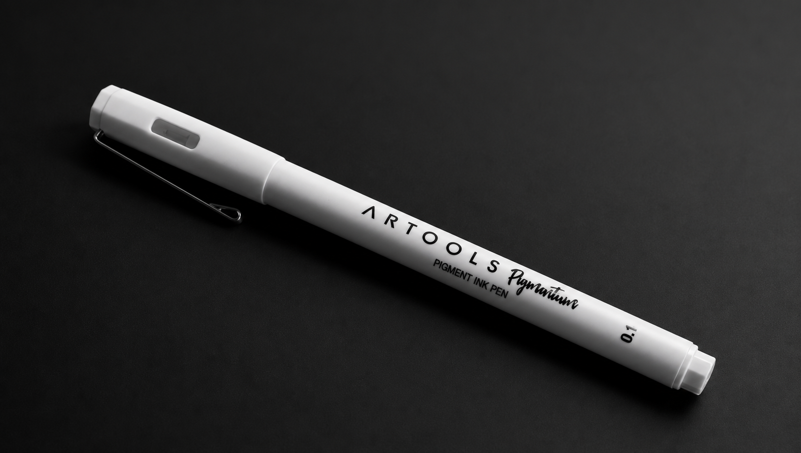
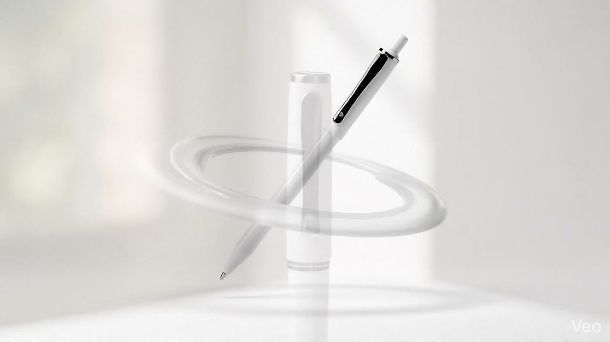

Controle natural
Uma forma alongada e limpa que aproxima mão, gesto e página, deixando a atenção permanecer onde importa: na ideia.
Pensada para acompanhar o fluxo das ideias, a Artools transforma simplicidade visual em uma experiência direta, expressiva e confortável.
Conhecer o desenho
Uma forma alongada e limpa que aproxima mão, gesto e página, deixando a atenção permanecer onde importa: na ideia.
O corpo branco, os contrastes escuros e os detalhes contidos criam uma presença reconhecível sem excesso visual.
Da anotação rápida ao traço mais cuidadoso, um instrumento concebido para acompanhar diferentes maneiras de pensar e criar.
Cada detalhe foi reduzido ao essencial para que nada interrompa o pensamento entre a primeira intenção e o último traço.
A resposta acompanha o movimento com naturalidade, criando uma escrita contínua que deixa a ideia seguir antes que ela se perca.
Uma presença discreta, pensada para ambientes onde a atenção precisa permanecer inteira e o gesto deve falar mais alto.
Proporção, leveza visual e apoio confortável se encontram para acompanhar anotações rápidas ou longas sessões de criação.

Precisão que acompanha o seu ritmo — da primeira intenção ao traço que permanece.
Recomeçar a experiência